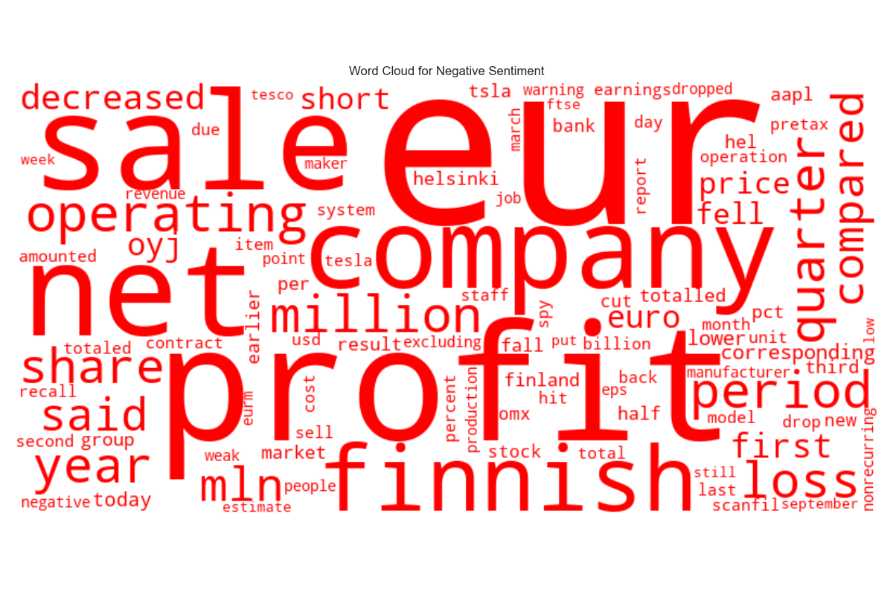

Finance Sentiment EDA - Summary Report
Generated on 2025-03-28 12:09:12
Key Insights
1. Dominant sentiment: Neutral (53.6% of samples) 2. Longest text on average: Neutral (123.1 characters) 3. Shortest text on average: Negative (105.3 characters) 4. Most words on average: Neutral (22.1 words) 5. Fewest words on average: Negative (19.3 words) 6. Most common words overall: eur, company, sale, profit, finnish 7. Words unique to Positive sentiment: rose, increased 8. Words unique to Negative sentiment: loss, compared, decreased, first, oyj 9. Words unique to Neutral sentiment: finland, business, also
Sentiment Distribution
Word Clouds
Positive Sentiment
Negative Sentiment
Neutral Sentiment
Most Common Words by Sentiment
Positive Sentiment
Negative Sentiment
Neutral Sentiment

Text Length Distribution